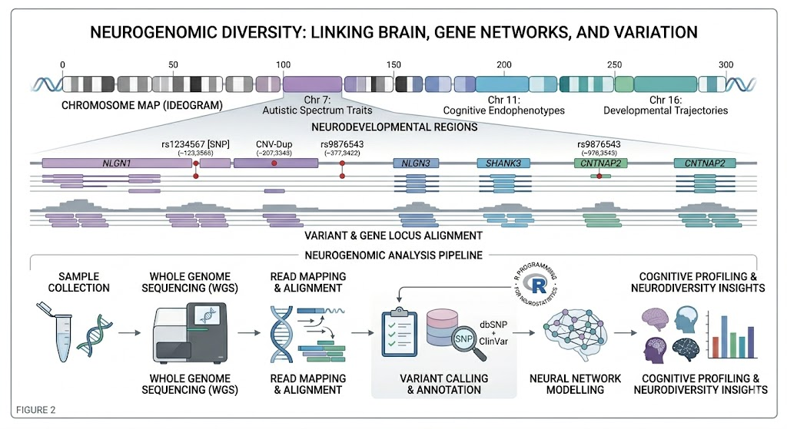
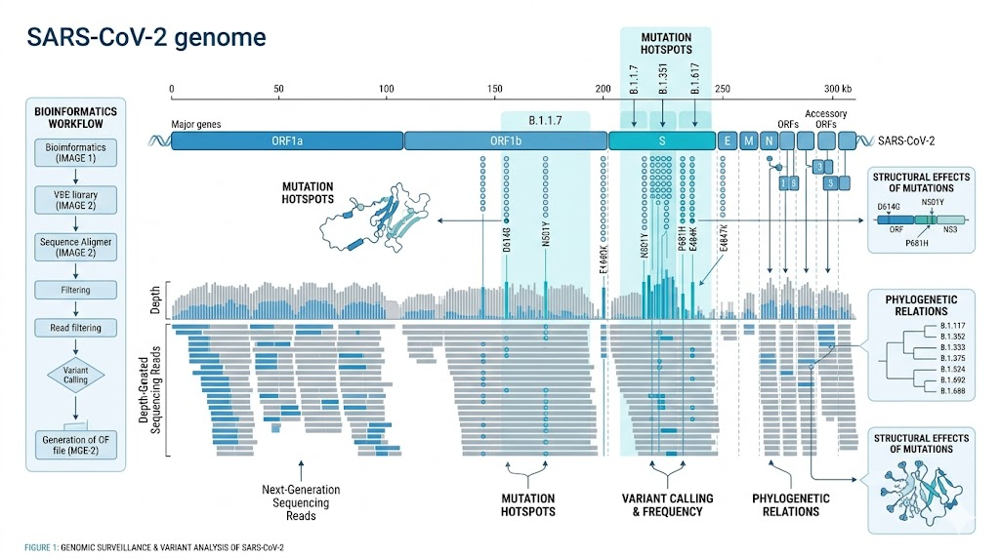
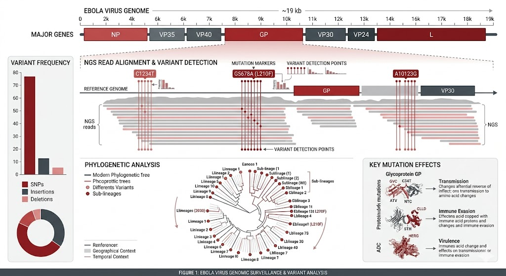
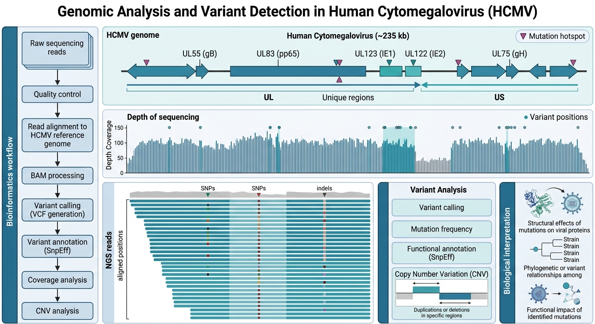

Bioinformatics • Genomics • Variant Analysis
Bioinformatics enthusiast focused on genomic data analysis, variant discovery and visualization using computational tools. My work explores viral genomics, neurodevelopment and data-driven biological research.

A curated archive on neurodiversity, autism, ADHD and related comorbidities.
View Site
Genome coverage analysis and variant visualization from viral sequencing data.
View Repository
NGS variant detection and genomic visualization pipeline.
View Repository
HCMV Variant Detection and Genomic Visualization Pipeline.
View Repository